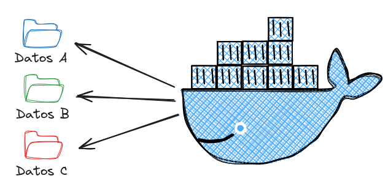
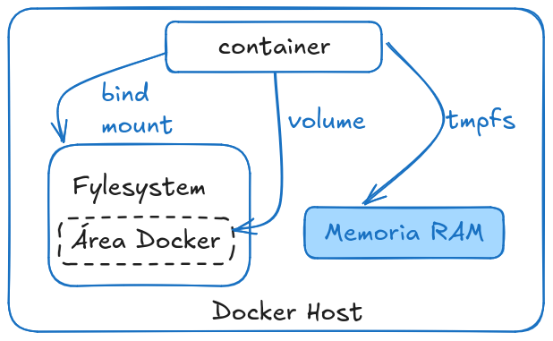

Fundamentos y usos prácticos de Docker
Clase 5 : Persistencia de datos
Temas de clase 5:
Persistencia de datos
LaboratoriosAdministrar datos en Docker
Volúmenes y persistencia de datos
Administrar datos en Docker
En Docker, el manejo del almacenamiento es crucial para persistir datos más allá del ciclo de vida de un contenedor. Dado que los contenedores son efímeros y todos los cambios de archivos dentro de un contenedor se pierden cuando el contenedor se elimina, Docker ofrece varias opciones para persistir estos datos de manera segura. La Doc los llama de forma abarcativa como mounts.
Tipos de mounts en Docker
Docker soporta varios tipos de mounts, cada uno adecuado para diferentes casos de uso:
- Volumes
- Bind Mounts
- tmpfs mounts

Docker Docs: Manage data in DockerVolumes
Los volúmenes son el mecanismo preferido para conservar los datos generados y utilizados por los contenedores Docker *[1].
- Son gestionados completamente por Docker
- Se almacenan en una ubicación específica en el host
/var/lib/docker/volumes/ - Pueden ser creados explícitamente o al momento de crear un contenedor.
Volumes: Ventajas
- Podemos administrar volúmenes utilizando los comandos de Docker CLI o la API de Docker.
- Funciona en contenedores Linux y Windows
- Los volúmenes se pueden compartir de forma más segura entre varios contenedores.
- Los volumes permiten almacenarse en hosts remotos o proveedores de nube, cifrar el contenido de los volúmenes o agregar otras funciones. (CIFS/Samba, NFS, Block devices, etc)
- Los volumes en Docker Desktop tiene una muy mejor performance en host Windows y Mac.
Bind Mounts
- Montan un directorio específico del host en un contenedor.
- Se definen con rutas absolutas (o relativas) del sistema de archivos del host.
- Ofrecen más flexibilidad pero menos aislamiento, ya que exponen directorios específicos del host al contenedor.
- Datos fácilmente accesible, pero menor seguridad.
- No hace falta crear volumenes, simplemente toma los datos del filesystem del host.
tmpfs Mounts
- Montan un sistema de archivos en memoria.
- Son útiles para datos temporales que no deben persistir entre reinicios del contenedor.
Limitaciones:
- No es posible compartir tmpfs mounts entre contenedores
- Solo está disponible en host Linux
Consultas
Gestión de volumenes Docker
Comandos básicos
Crear volumenes
Docker nos provee mecanismos desde la Docker CLI para gestionar volúmenes. Vamos a crear un volumen llamado "my_volume".
docker volume create my_volume
Listar volumenes
docker volume ls
Montar volumenes en contenedores
Vamos a montar el volumen my_volume en un contenedor.
docker run --rm -it -v my_volume:/home alpine sh
touch /home/mensaje.txt # Creamos un archivo vacío mensaje.txt
exit # Salimos del contenedor. Se borrará --rm
docker run --rm -it -v my_volume:/home ubuntu bash
ls -l /home
eliminar volumen
No debe haber ningún contenedor utilizando el volumen. Antes de eliminar el volumen, probablemente tengamos que eliminar los contenedores que lo tengan montado aunque no estén corriendo.
docker volume rm VOLUME_NAME
Eliminar volumenes utilizados
docker volume prune
Inspeccionar volumen
docker volume inspect VOLUME_NAME
"CreatedAt": "2024-08-23T09:49:48-03:00",
"Driver": "local",
"Labels": null,
"Mountpoint": "/var/lib/docker/volumes/my_volume/_data",
"Name": "my_volume",
"Options": null,
"Scope": "local"
Copiar archivos a contenedores
Podemos copiar contenido de nuestro host hacia un contenedor con el comando docker cp [OPTIONS] [PATH] CONTAINER:/[DESTINATION]
docker cp config.json contenedor_prueba:/mnt
O a la inversa, copiar desde el contenedor hacia el host invirtiendo los paths
docker cp contenedor_prueba:/mnt/config.json .
Esto no es exclusivo de los volúmenes. Se pueden copiar a cualquier path del contenedor por mas que no tenga un volumen montado.